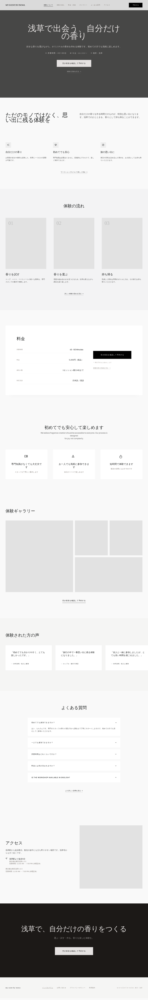
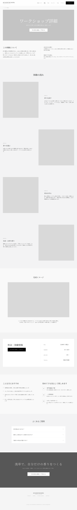
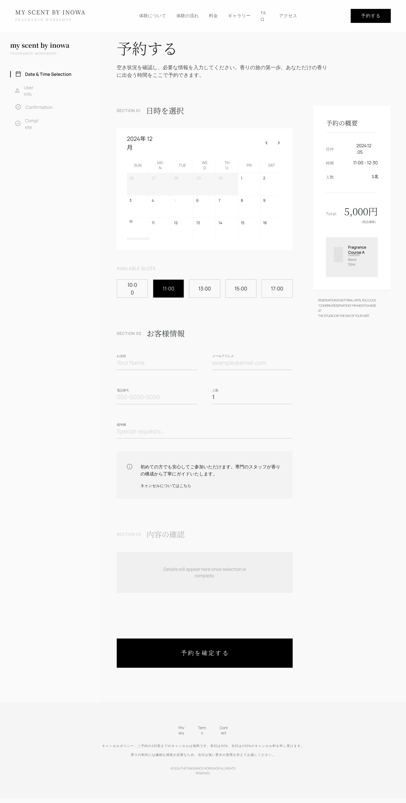
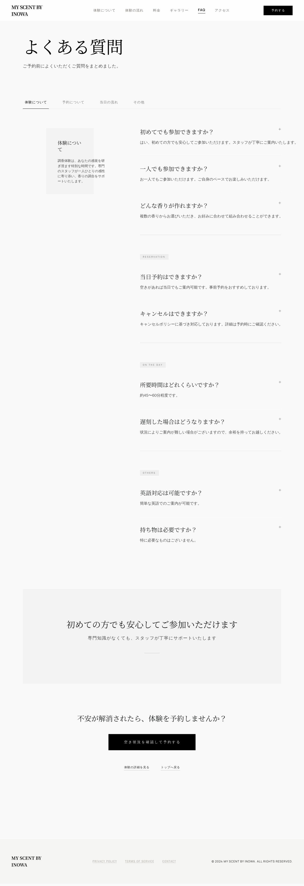
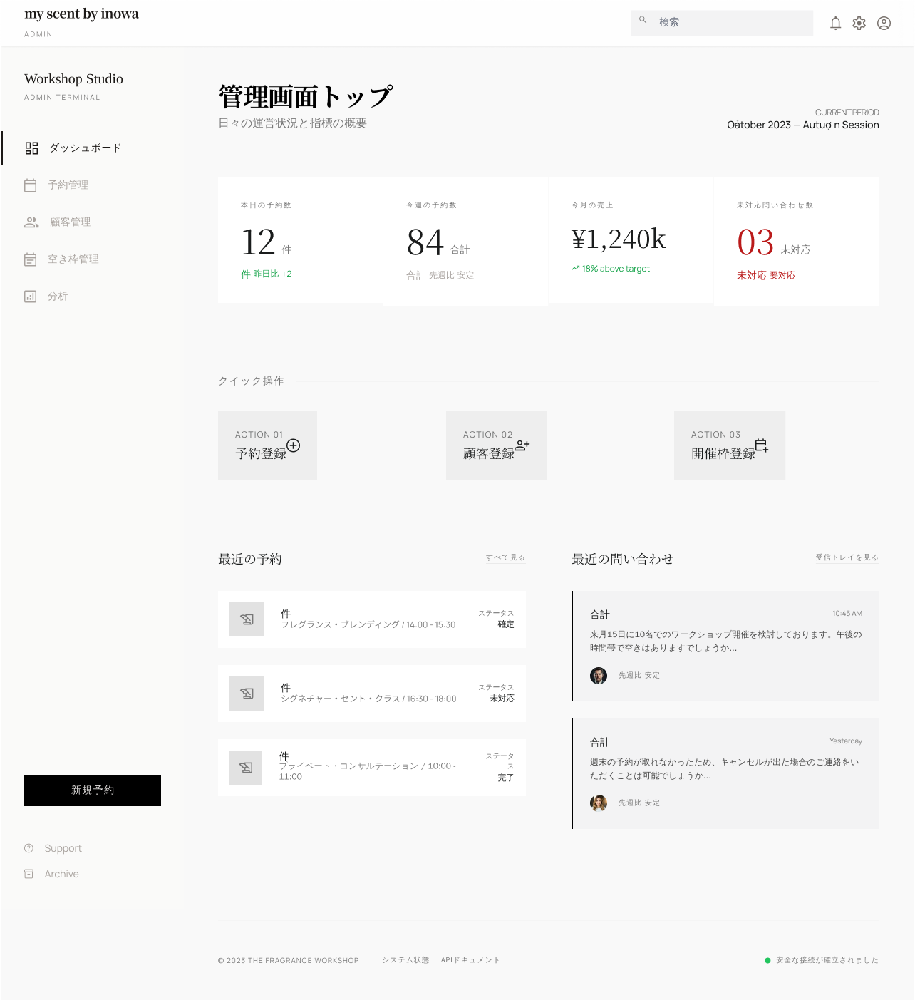

ワイヤーフレーム
ワイヤーフレーム作成方法
トップページ

■ ヘッダー
なぜその位置に配置したか：ページ最上部に配置し、どのタイミングでもナビゲーションや予約にアクセスできるようにするため
ユーザーへの効果：迷わず情報にアクセスでき、興味を持った瞬間にすぐ行動できる
■ ヒーローセクション
なぜその位置に配置したか：ファーストビューでサービスの魅力を一瞬で伝えるため
ユーザーへの効果：「楽しそう・やってみたい」と直感的に感じ、離脱を防ぐ
■ サービスの魅力紹介
なぜその位置に配置したか：興味を持った直後に価値を具体化するため
ユーザーへの効果：体験の特徴が理解でき、参加イメージが湧く
■ 体験の流れ
なぜその位置に配置したか：サービス理解の後に具体的な体験イメージを提示するため
ユーザーへの効果：「自分でもできそう」と感じ、不安が軽減される
■ 料金
なぜその位置に配置したか：体験内容を理解した後に価格を提示することで納得感を高めるため
ユーザーへの効果：価格に対する不安が減り、検討が進む
■ 初心者向け安心訴求
なぜその位置に配置したか：料金確認後の不安を解消するため
ユーザーへの効果：「自分でも大丈夫」と安心し、離脱を防ぐ
■ 体験ギャラリー
なぜその位置に配置したか：理解と安心の後に視覚的な魅力を強化するため
ユーザーへの効果：体験の楽しさが直感的に伝わり、参加意欲が高まる
■ 体験者の声
なぜその位置に配置したか：感情が高まったタイミングで信頼性を補強するため
ユーザーへの効果：第三者の評価により安心感が増し、意思決定を後押しする
■ よくある質問
なぜその位置に配置したか：最終検討段階での疑問を解消するため
ユーザーへの効果：細かい不安がなくなり、予約のハードルが下がる
■ アクセス
なぜその位置に配置したか：来店前の最終確認として必要な情報を提示するため
ユーザーへの効果：具体的な来店イメージができ、行動に移りやすくなる
■ 下部CTA
なぜその位置に配置したか：情報をすべて確認した後に行動を促すため
ユーザーへの効果：迷わず予約に進め、コンバージョン率が向上する
■ フッター
なぜその位置に配置したか：補足情報と信頼情報をまとめて提示するため
ユーザーへの効果：最後の不安が解消され、安心してサイトを離脱できる
下層ページ
【ワークショップ詳細ページ】

配置意図：サービス内容・体験の流れ・料金・安心要素を順に見せることで、興味を持ったユーザーの理解を深め、参加への不安を解消する構成としている。
【予約ページ】

配置意図：日時選択、入力フォーム、予約内容確認を上から順に配置し、迷わず予約完了まで進める導線にしている。
【予約完了ページ】

配置意図：予約完了の安心感を最初に伝えたうえで、予約内容確認・来店案内・共有導線を配置し、満足感と来店期待を高める構成としている。
【FAQページ】

配置意図：参加前の疑問をカテゴリごとに整理し、不安解消のあとに予約CTAを配置することで、離脱を防ぎ予約行動につなげる。
Webアプリケーション画面

■ ログイン画面
・ロゴ
・管理画面タイトル
・メールアドレス入力欄
・パスワード入力欄
・ログインボタン
・エラーメッセージ表示エリア
■ 一覧画面
・ヘッダー
・サイドメニュー
・画面タイトル
・検索フォーム
・ソート項目
・一覧テーブル
・詳細ボタン
・編集ボタン
・ページネーション
・新規登録ボタン
■ 新規登録画面
・ヘッダー
・サイドメニュー
・画面タイトル
・入力フォーム
・必須表示
・確認ボタン
・登録ボタン
・戻るボタン
・バリデーションメッセージ
■ 詳細画面
・ヘッダー
・サイドメニュー
・画面タイトル
・登録情報表示エリア
・編集ボタン
・削除ボタン
・一覧へ戻るボタン
■ 編集画面
・ヘッダー
・サイドメニュー
・画面タイトル
・入力済みフォーム
・更新ボタン
・キャンセルボタン
・バリデーションメッセージ
・一覧へ戻るボタン
スマートフォン版
.png)
配置意図：スマートフォンでは縦スクロールを前提とし、ファーストビューで魅力を伝えた後、サービス理解→安心→信頼→予約の順に情報を整理することで、直感的に予約まで進める導線設計としている。